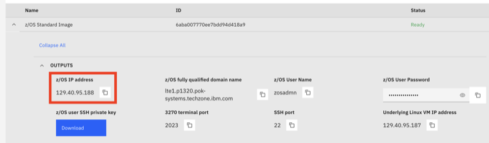
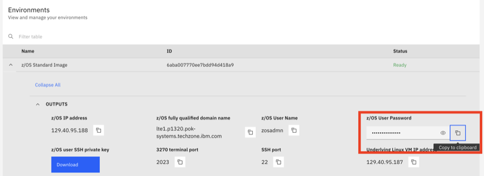
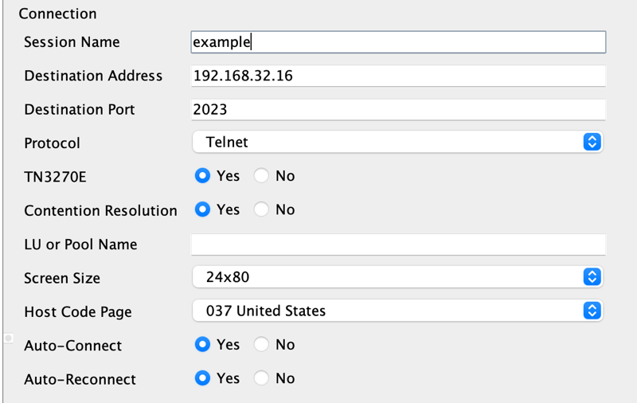
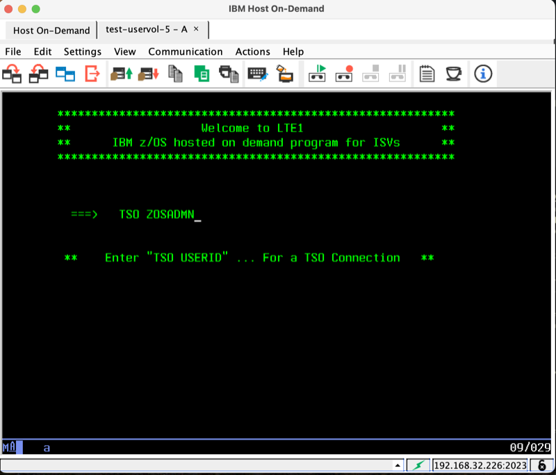
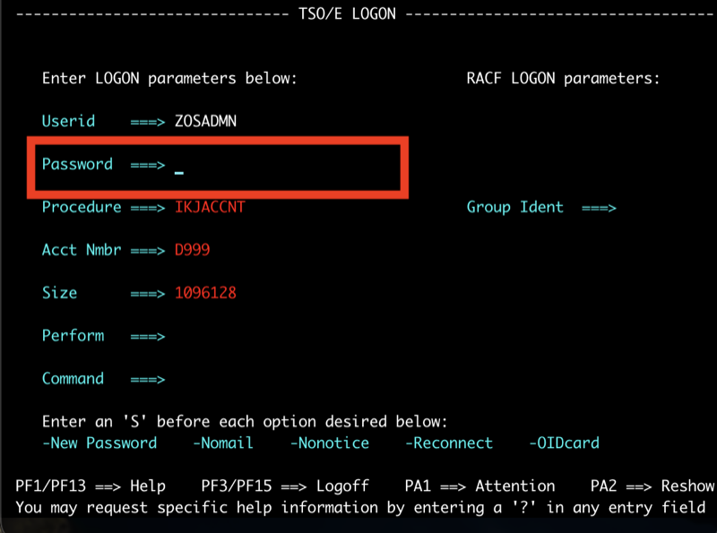
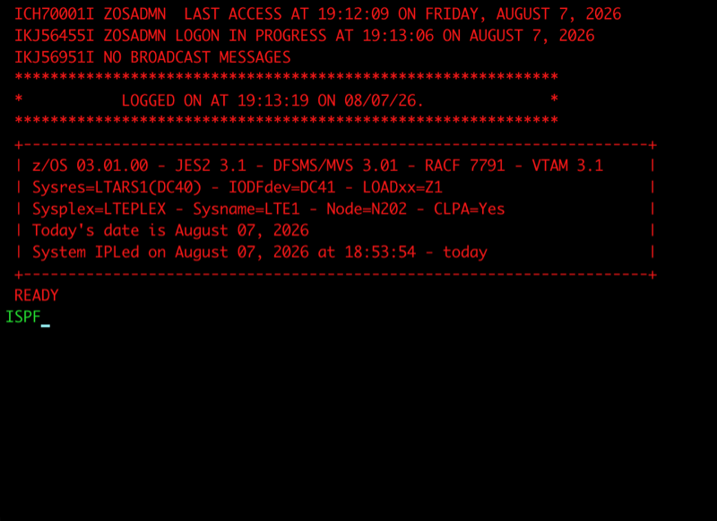
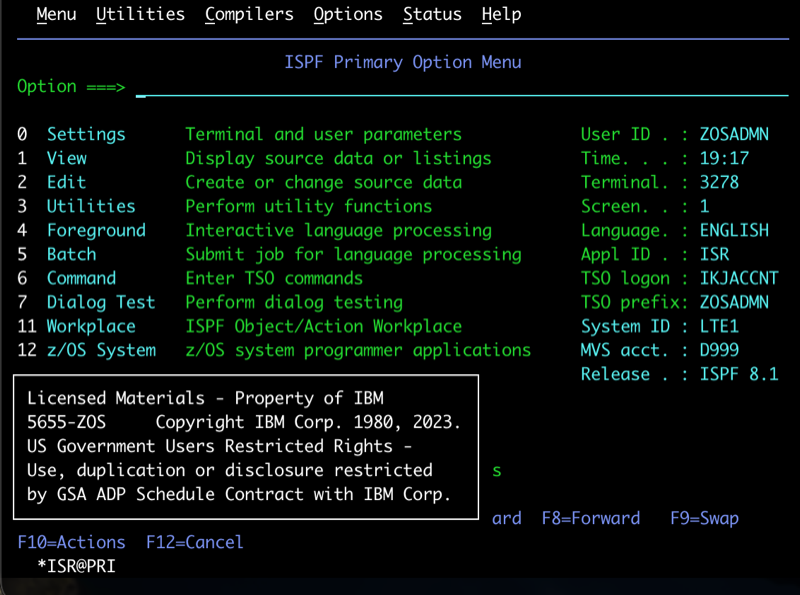

Connecting to Your Instance in TechZone
Learn how to connect to a provisioned z/OS demo instance from TechZone.
⚠️ Note: Cisco Secure Client is required to access the on-premises z/OS environment provisioned with this collection. If you do not want to, or cannot, install it on your computer, you'll need to provision a Jump Server (a Windows VM that comes with Cisco installed) to connect through.
Prerequisites
- A provisioned z/OS instance from TechZone in
Readystate - If connecting to TSO, a 3270 terminal emulator installed (e.g., IBM Host On-Demand or tnz)
Step 1: Connect to VPN
Network access to the z/OS instance is required before connecting. How you connect depends on whether you are an IBMer or a Business Partner.
For IBMers:
Connect to the IBM network using Cisco Secure Client as you normally would. No additional VPN is required.
For Business Partners / External Users:
VPN credentials are provided with your TechZone reservation. Use one of the following methods:
Option A: Cisco Secure Client
- If you don't already have Cisco Secure Client, you can download it here, by providing the VPN credentials from your z/OS TechZone Reservation Details when prompted.
- Once downloaded and installed, open Cisco Secure Client
- Enter the VPN hostname from your TechZone reservation details (
asa003b.centers.ihost.com) and click Connect - Enter the Username and Password from the VPN credentials provided with your TechZone z/OS Reservation Details when prompted and click Connect
For more help connecting to the VPN, see TechZone's VPN documentation.
Option B: Jump Server
If it's not possible or too inconvenient to install Cisco Secure Client on your workstation, use the browser-based Windows desktop jump server — see Using the Jump Server for a full walkthrough.
Step 2: Gather Your Connection Details
Before connecting, pull the following from your z/OS reservation details page in My Requests:
- z/OS IP Address
- z/OS User Password (the generated passphrase for the
zosadmnaccount)


Step 3: Connect
Jump to:
Connect via 3270 Terminal
3.A.1 Open Your 3270 Emulator
Open a 3270 emulator (e.g., IBM Host On-Demand).
3.A.2 Configure the Connection
Create a new connection with these settings:
- Host: The z/OS IP address from Step 2
- Port:
2023

- If using zti, just use the default port (992).
Session: NONE> GOTO 129.40.95.188
3.A.3 Log In to TSO
Once connected, log in:
TSO ZOSADMN

Enter the passphrase from Step 2 when prompted.

3.A.4 Start ISPF
Once you see the 'Ready' prompt, type ISPF and hit Enter.

You will then be presented with the ISPF Primary Option Menu.

Connect via SSH
SSH access to z/OS is used for shell-level access and for tasks like changing your passphrase.
SSH with Password
- Open a terminal and type the following command using the z/OS IP address from Step 2 and hit Enter.
ssh zosadmn@<ip-address>
⚠️ If you are using the z/OS Standard + Linux Sidecar image, or an image that's built from it, SSH to z/OS uses port 2222. Add
-p 2222to the end of your SSH command.
-
When prompted, enter the z/OS User Password from Step 2.
-
Upon initial login, you may be prompted to accept the host key — type yes and hit Enter.
-
Prefer key-based auth? See Using an SSH Key below.
Using an SSH Key
Your TechZone reservation also provides an SSH key. You may need it for various demos or to get into your instance if you changed and then forgot the password.
First, download the key from TechZone from the reservation details page and then rename it to something simple like zdep-key.pem before proceeding — the default filename may contain spaces and parentheses that can cause SSH to fail if not escaped properly.
If this is your first time downloading the key:
mv ~/Downloads/pem_user_privatekey_download.pem ~/Downloads/zdep-key.pem
⚠️ If you have downloaded a TechZone key before, your browser may have saved it with a number appended. It must be renamed using quotes: mv ~/Downloads/"pem_user_privatekey_download (1).pem" ~/Downloads/zdep-key.pem
Or simply rename it in your file manager by right-clicking on it.
Then, for macOS or Linux, make sure to set the correct permissions:
chmod 600 ~/Downloads/zdep-key.pem
Then connect with the -i flag to pass the key path to the SSH command:
macOS / Linux
ssh zosadmn@<ip-address> -i ~/Downloads/zdep-key.pem
Windows (PowerShell)
ssh zosadmn@<ip-address> -i C:\Users\<UserName>\Downloads\zdep-key.pem
Changing Your Passphrase (Optional)
To change your passphrase from the provisioning-generated one, connect via SSH and run the password change script:
Run the Password Change Script
password_change.py -u ZOSADMN -p <new_passphrase>
RACF Passphrase Rules:
- Minimum 14 characters, maximum 100
- At least 2 alphabetic characters (A-Z, a-z)
- At least 2 non-alphabetic characters (numbers, punctuation, or spaces)
- No more than 2 consecutive identical characters
- Cannot contain your user ID
Or you can use -g to have it generate one for you randomly:
password_change.py -u ZOSADMN -g
Troubleshooting
Cannot Reach the z/OS IP Address
- Confirm VPN is connected
- Verify the IP address from your TechZone reservation details
- Check that the instance is running (not stopped or expired)
TSO Login Fails
- Verify you are using username
ZOSADMN - Confirm you are entering the passphrase from your TechZone reservation details correctly
- If you have changed the passphrase, ensure the new one meets RACF rules above
SSH Permission Denied (when changing passphrase)
- Check the key file permissions:
chmod 600 your-key.pem - Verify you are using the correct key file from your TechZone reservation
- Ensure VPN is connected before attempting SSH
Next Steps
- z/OS Navigation Reference — TSO/ISPF, USS commands, dataset navigation
- Image Catalog — Browse available demo images and their capabilities
- FAQs — Common questions and answers